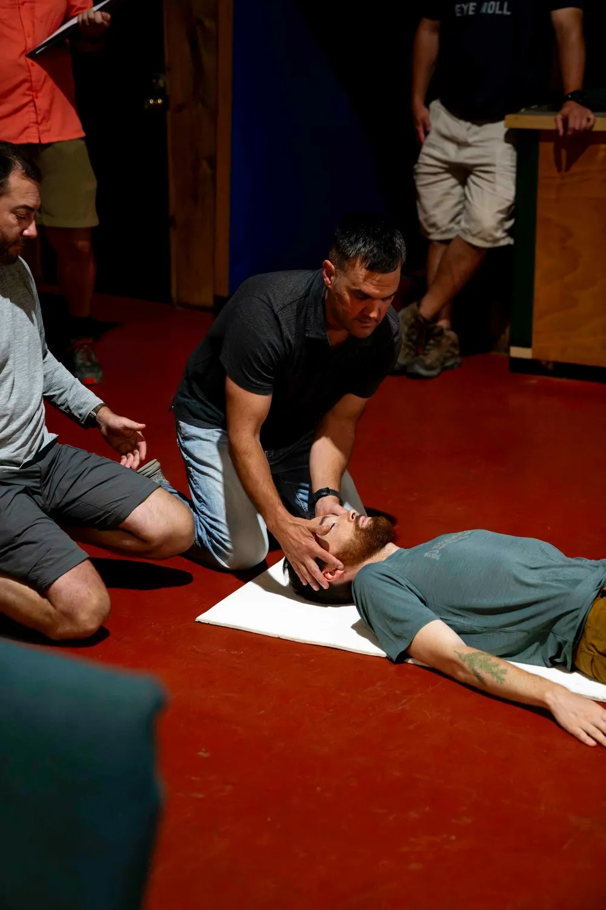
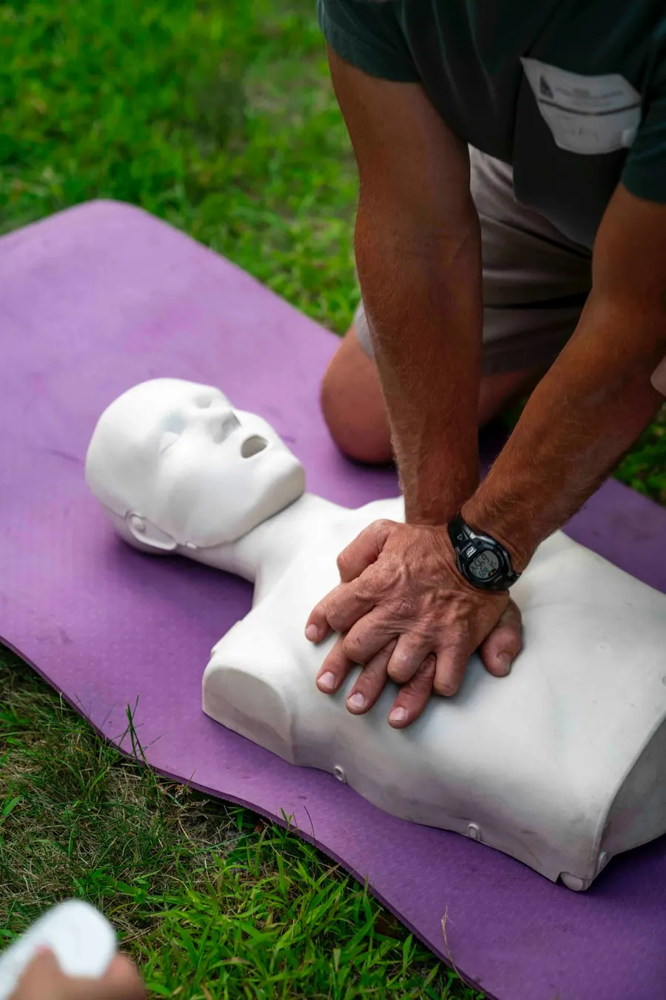

Formation & sécurité au travail
Formez vos équipes. Prévenez les risques. Protégez votre entreprise.
FormUp JC accompagne toutes les entreprises en santé et sécurité au travail : formations SST, prévention des risques professionnels et réalisation du Document Unique (DUERP). Concret, réglementaire, adapté au terrain.
- Intra et inter-entreprises
- Éligible aux financements OPCO et FAF

12+ ansd’expérience en santé et sécurité au travail
- 12+ ans d’expérienceen santé et sécurité au travail
- Formatrice SST certifiéeQualiopi, processus certifié
- Intra et inter-entreprisespartout en France
- Approche participativepratique et immédiatement applicable
Nos formations
Des formations concrètes, pour des équipes plus sûres
-
Formation SST initiale
Devenez Sauveteur Secouriste du Travail : secourir, alerter et prévenir les accidents dans votre entreprise.
-
Recyclage SST
Maintenez vos acquis : renouvellement des connaissances en secourisme des salariés déjà diplômés.
-
Sensibilisation « Gestes qui sauvent »
Alerte, saignement, étouffement, arrêt cardiaque, défibrillateur : les bons réflexes en une demi-journée.
-
Référent prévention & DUERP
Acquérez les bases de la santé-sécurité et apprenez à réaliser le Document Unique et un plan d’action.
-
Prévention incendie & extincteurs
Connaître les risques incendie de votre entreprise et manipuler un extincteur (sans feu réel).
-
Analyse des accidents du travail
Comprendre les coûts directs et indirects, appliquer la méthode de l’arbre des causes, bâtir un plan d’action.
-
Formations sur mesure
Port des EPI, manutention et port de charges : des sensibilisations construites à la demande de l’entreprise.
-
Safety Day
Faites de la sécurité un jeu et un moment de cohésion : une journée de sensibilisation ludique pour vos équipes.

Formation phareSauveteur Secouriste du Travail
Formation SST : sachez réagir face à un accident
Secourisme et prévention des accidents du travail : une formation à la fois pratique et ludique, pour que chaque salarié sache alerter, protéger et secourir.
- Durée
- 2 jours
- En inter
- 350 € HT / personne
- En intra
- 1 500 € groupe de 4 à 10
- Recyclage
- 1 jour dès 300 € HT / pers.
Pourquoi FormUp JC
Une expertise de terrain, une pédagogie qui marque
Parce que prévenir vaut toujours mieux que guérir : un environnement de travail plus sûr protège les personnes autant que la performance.
- 01
Une approche pratique et participative
Mises en situation, jeux, exercices concrets : les participants retiennent les gestes et repartent avec des réflexes immédiatement applicables.
- 02
Une formatrice SST certifiée
Plus de 12 ans d’expérience en santé et sécurité au travail au sein de grandes entreprises, aujourd’hui au service de toutes les structures.
- 03
Des programmes adaptés à votre terrain
Contenus ajustés à votre activité, à vos risques et à vos horaires. Une démarche opérationnelle et conforme à la réglementation.
- 04
Intra ou inter-entreprises
Formez votre groupe dans vos locaux, ou inscrivez un collaborateur à une session : vous choisissez le format qui vous convient.
- 05
Proximité et pragmatisme
Un interlocuteur unique, à l’écoute, qui privilégie des solutions simples et efficaces plutôt que des dispositifs lourds.
- 06
Partout en France
Des solutions adaptées à votre entreprise, quel que soit votre secteur d’activité ou votre région.

À propos de FormUp JC
Proximité, pragmatisme et impact
« Parce que prévenir vaut toujours mieux que guérir. »
Après plus de 12 ans d’expérience en santé et sécurité au travail au sein de grandes entreprises, j’ai choisi de créer mon activité pour exercer ce métier en accord avec mes valeurs.
Issue d’une famille de commerçants, j’ai vu combien les problèmes de santé peuvent bouleverser une vie et une entreprise. Cette expérience nourrit ma conviction : un environnement de travail plus sûr protège les personnes autant que la performance.
En savoir plusComment ça se passe
Une démarche simple, en quatre étapes
- 01
Échange
Un premier contact par e-mail ou par formulaire pour comprendre votre contexte et votre besoin.
- 02
Analyse de vos besoins
Nous identifions vos risques, le public concerné et le format le plus adapté : intra, inter, sur mesure.
- 03
Formation
La formation se déroule chez vous ou en session ouverte, avec une pédagogie active et concrète.
- 04
Financement
Votre entreprise peut solliciter son OPCO ; les dirigeants et indépendants peuvent se tourner vers le FAF.
Avis de nos clients
Ils ont suivi nos formations
Julie est une formatrice dynamique et très compétente. Elle a su être à l’écoute du groupe tout en donnant des conseils précis.
Formation excellemment menée dans un contexte pas facile. Julie a su adapter le contenu pour que la formation soit concrète et pertinente. Depuis, nos équipes sont bien plus efficaces concernant la sécurité dans nos activités.
Une formation très intéressante et enrichissante. La formatrice était pédagogue, à l’écoute. Les mises en situation permettent de bien comprendre et de retenir les gestes. Une formation utile et rassurante que je recommande !
Formation très utile et concrète. Les explications étaient claires et les exercices pratiques permettent de mieux appréhender les bons gestes et réflexes.
Très bonne formation complète et dynamique, avec beaucoup d’activités. Je recommande.
Formation très utile et mises en pratique adaptées. Julie est une formatrice dynamique et à l’écoute. Je recommande vivement.
Formation très importante pour qui veut s’occuper d’une association, ou même pour les petits travers du quotidien. J’ai eu à utiliser les premiers gestes acquis lors de la formation sans aucune appréhension.
Formation très sympathique à suivre, surtout sous forme de jeux. Formatrice très sympa également.
Merci pour cette formation sur les premiers secours. Interactive, avec une animation au top.
Très bonne formation, très intuitive. Je recommande.
Besoin d’une formation adaptée à votre entreprise ?
Parlons de vos équipes, de vos risques et de vos contraintes. Nous vous répondons avec une proposition claire, adaptée à votre activité.
Contact
Parlons de votre projet de formation
Décrivez-nous votre besoin : nous revenons vers vous avec une proposition adaptée.
- E-mailformupjc@gmail.com
- Zone d’interventionPartout en France
- SIRET109 117 655 00018